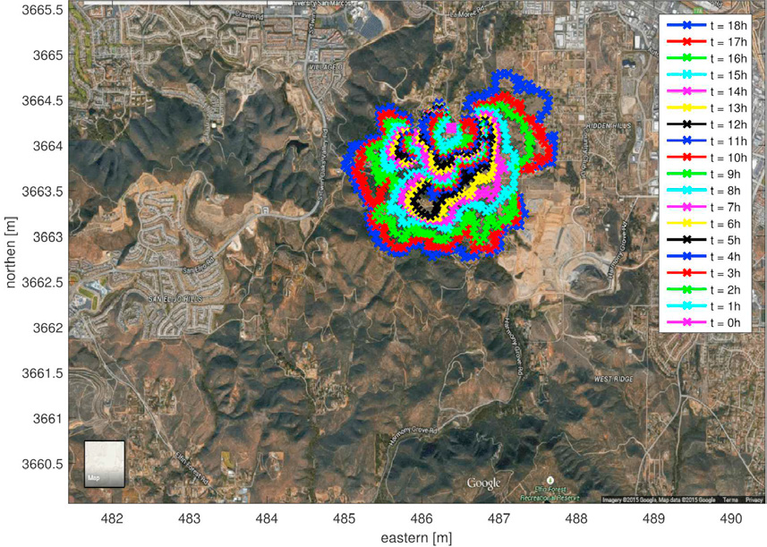
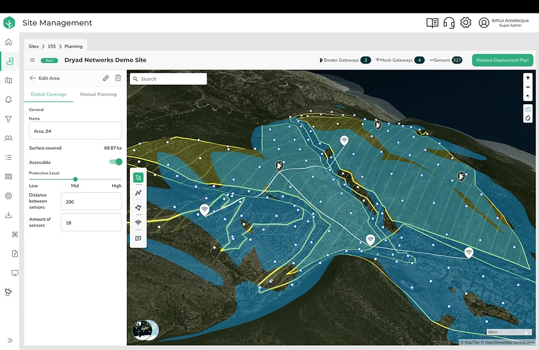
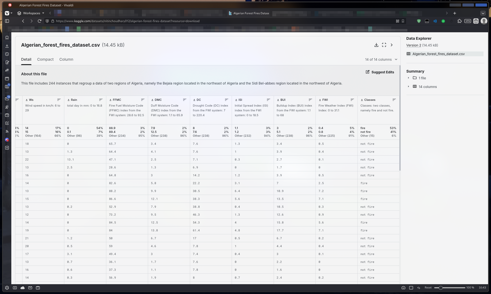
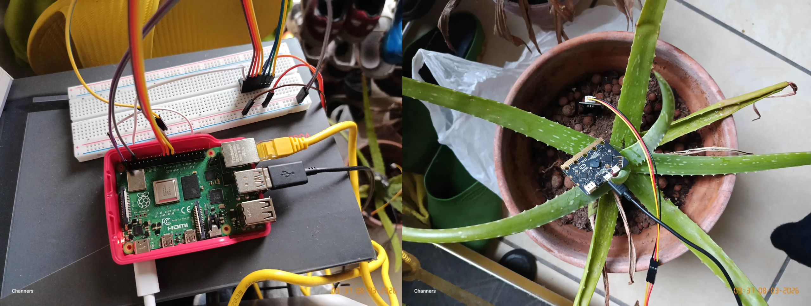
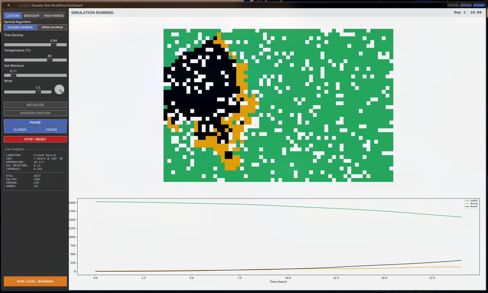
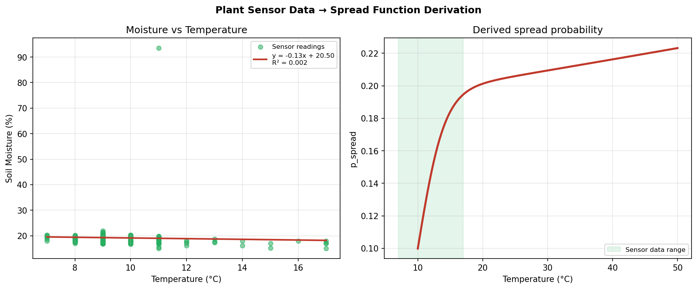
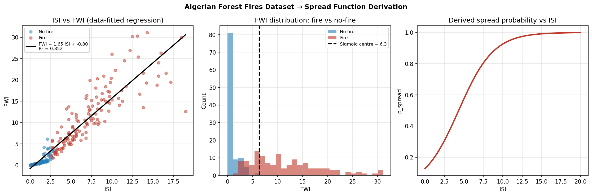
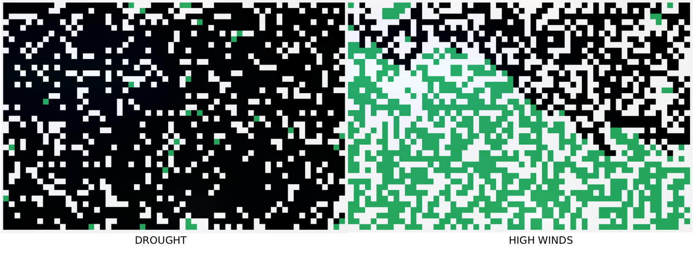

Wildfire Risk Simulation System
An agent-based wildfire spread model driven by real embedded sensor data and open-source fire weather indices, with adaptive emergency alert feedback.
Note: All sections of this report are summaries drawn from diary.txt, which is included in the Report folder and contains the full week-by-week development diary for this project.
Meeting The Brief
The artefact is made up of two linked components: a Raspberry Pi based embedded system that records soil moisture and ambient temperature from a potted plant, and a Python wildfire simulation model whose spread functions are driven by that sensor data combined with a publicly available fire weather dataset. Together they address every basic and advanced requirement on the brief.
Raspberry Pi 4B with a capacitive soil moisture sensor (analogue, via MCP3008) and a BBC micro:bit V2 temperature sensor (digital, over USB).
Primary output is plant_data.csv written hourly to the Pi's microSD card.
Agent-based wildfire spread model in Python. Two spread functions: a closed-source function from a regression of the plant sensor data, and an open-source function using FWI regression and sigmoid parameters derived from the Algerian Forest Fires dataset.
Approximately 134 hourly readings of Temp_C, Raw_Soil, and Moisture_Percent collected over five continuous days, stored in plant_data.csv.
DROUGHT - elevated temperature, low moisture, light wind, closed-source spread.
HIGH WINDS - Santa Ana-style conditions replicating the January 2025 Palisades Fire environment; high wind speed, low moisture, fixed offshore bearing; open-source spread function.
System tested with two changing inputs: running a radiator produced a sustained rise then fall in Temp_C across an eight-hour window; watering the plant caused a sharp spike in Moisture_Percent
Risk label updates automatically as fire spreads. At 10% tree loss a RISK LEVEL: WARNING popup advises emergency preparation; at 40% loss a RISK LEVEL: CRITICAL popup issues an evacuation order. Both fire once per threshold crossing and the risk label colour updates to match.
Investigation
Before settling on a design direction I researched several categories of existing solution. Operational wildfire tools such as the US Forest Service's FARSITE system [2] and Canada's Canadian Forest Fire Weather Index (FWI) system [3] both use grid-based spread models driven by wind, slope, and fuel-moisture inputs - the same variables used in my own simulation. These confirmed that probabilistic, cell-by-cell spread is a widely used and defensible modelling approach.

I also investigated IoT-based forest monitoring platforms. Commercial systems described by Bosch [8] and DRYAD Networks [9] deploy wireless sensor meshes across real forests, measuring temperature, humidity, and CO₂ in near real time. These inspired the embedded system component: rather than simulating sensor data, I wanted a physical subject producing genuine, noisy, time-varying readings similar to what a real forest sensor might generate.

For datasets, I evaluated several Kaggle wildfire repositories. The Algerian Forest Fires dataset [1] stood out because it contained pre-calculated ISI and FWI values across 244 daily observations with a clean binary fire/no-fire label, making regression and sigmoid fitting straightforward without extensive preprocessing. Most alternatives were too sparse, lacked the right variables, or required significant cleaning.

The January 2025 Palisades Fire [4] was the real-world event that made the topic feel urgent. Reports on how the Santa Ana wind pattern drove that fire shaped the HIGH WINDS preset scenario and motivated adding long-range ember spotting, since spot fires jumping the main front were widely reported as a key driver.
How research influenced design choices. FARSITE and FWI research confirmed that a grid-based probabilistic model driven by wind and fuel moisture is a legitimate, well-established approach, directly justifying the cellular automaton design. Bosch and DRYAD research motivated building a real embedded sensor system rather than generating synthetic data. The Algerian dataset determined that the open-source spread function would use ISI and FWI indices. The Palisades Fire reports led directly to the HIGH WINDS preset and ember-spotting mechanic. Meteorological research showing that ambient temperature follows a sinusoidal diurnal pattern led to modelling temperature variation using a sine function offset by six hours, so fire behaviour changes meaningfully across simulated time.
Plan and Design
The project was designed around two principal components developed in parallel and then integrated: the embedded system for data collection and the Python simulation model.
Design objectives. The embedded system needed to log real sensor readings reliably over at least one week with no manual intervention. The simulation needed to be interactive enough for a non-technical user to explore the effects of changing weather conditions, while remaining grounded in real data. The feedback mechanism needed to produce actionable emergency messages reflecting how real fire agencies communicate risk, not just a number changing colour.
Options considered. Four disaster risk scenarios were evaluated before wildfires were chosen: a drought-cycle model tracking carbon storage, a pest outbreak model using temperature-driven population spread, an air quality model driven by the atmospheric sensor, and the final wildfire choice. Wildfire was selected because it offered the richest interaction between both sensor types, the external dataset was the strongest available, and the connection to the Palisades Fire provided genuine motivation across twelve weeks.
Stakeholders and end-user needs. Primary end users are fire department analysts and emergency planners who need to explore fire behaviour under specific forecast conditions before committing to an evacuation order. Secondary stakeholders include local government agencies using simulation outputs to inform land management policy and students using the model as a teaching tool. These groups shaped key design choices: preset scenario tabs allow repeatable, comparable runs; the step-by-step status banner guides non-experts through the workflow; and the emergency popups were written in the plain language of real public emergency communications.
Technologies chosen. Python was mandatory under the brief. Tkinter was chosen for the GUI because it requires no additional installation and is well-suited to embedding a matplotlib canvas. Matplotlib's FuncAnimation [10] handles real-time grid updates. NumPy was used for regression fits in both analysis scripts. The BBC micro:bit [6] replaced the BMP280 after sensor failure in Week 7; MicroPython on the micro:bit handles serial temperature transmission and pyserial on the Pi reads it. The MCP3008 [7] reads the analogue soil sensor over SPI.

System architecture. The system has three layers. The embedded hardware layer: the Raspberry Pi 4B reads the capacitive soil moisture sensor via MCP3008 over SPI, and the BBC micro:bit sends temperature over USB serial. The logging script combines both into a timestamped row appended to plant_data.csv once per hour. The data analysis layer feeds that CSV into analysis_closed.py, which performs a linear regression of moisture against temperature, extracting slope, intercept, mean, and standard deviation for the closed-source spread function. Separately, analysis_open.py fits a regression and sigmoid to the Algerian dataset. The simulation layer, main.py, imports all six constants at startup and runs a Tkinter GUI on a Matplotlib FuncAnimation loop.
Moisture = f(Temp)
R^2 = 0.177
mean_T, std_T
FWI = 1.653*ISI - 0.804
R^2 = 0.852 / sigmoid fit
reg slope, intercept
spread functions / wind model / diurnal cycle / tabbed scenarios
Create
Development milestones. Development followed an iterative cycle across fourteen weeks. The major milestones in order were:
Built the initial Agent-Based Model (covered in 5th year): four cell states (EMPTY, TREE, BURNING, BURNED), a sigmoid spread formula driven by temperature and moisture, a colourmap grid visualisation, and a Tkinter window with step-by-step FuncAnimation.
Sliders for temperature, moisture, and density; INITIALISE / RANDOM IGNITION / click-to-ignite; risk label (WARNING at 10%, CRITICAL at 40%) with emergency alert popups; live analytics panel, status banner, and playback controls. Sine-wave diurnal cycle (peak 12:00, trough 00:00, half-hour steps). Wind speed slider and compass widget; dot-product directional spread; ember spotting above 5 km/h; drifting particles above 7 km/h.
Three-tab notebook: CUSTOM, ONE (drought, closed-source), TWO (Santa Ana winds, open-source). Fixed: wrong mode strings; presets not loading wind/spread function; toggle_pause() destroying animation object; imshow clipping half a cell off every edge; on_click igniting non-tree cells (Test 16).
Pi set up over SSH; BMP280 connected over I2C alongside the soil sensor, calibrated by recording raw values in open air (VAL_DRY = 54 000) and submerged in water (VAL_WET = 27 500). The BMP280 failed after several hours in Week 7; diagnosed by checking solder joints and re-running I2C scans before replacing it with a BBC micro:bit. The logging script was rewritten from scratch: MicroPython on the micro:bit transmits temperature every five seconds over USB serial; the Pi reads it via pyserial at /dev/ttyACM0 with a -2 °C offset to correct for the micro:bit's tendency to read high. To test BR3, a radiator was run from 9am-5pm on the 7th (producing a sustained Temp_C rise and fall) and the plant was watered on the 9th (producing a sharp Moisture_Percent spike). Final dataset: 134 hourly readings.
Algerian dataset cleaned by skipping rows where the first field couldn't be parsed as an integer. Linear regression gave FWI = 1.653 * ISI - 0.804 (R^2 = 0.852); sigmoid centre 6.35 derived as the midpoint between mean FWI of fire and no-fire days, scale 3.71 as half the overall FWI standard deviation. Plant data regression: Moisture = -0.2795 * Temp + 21.37 (R^2 = 0.177, p < 0.001) - the modest R² was expected given the narrow 8-11 °C indoor range; the significant p-value confirmed the negative trend was genuine. Both replaced hard-coded constants in main.py; preset tabs renamed DROUGHT and HIGH WINDS.
Re-ran all 18 tests against the final build (Test 19: all passed). Inline comments added throughout. Report webpage built in HTML/CSS; submission video recorded in OBS and edited to exactly 5 minutes in Kdenlive.

Testing. Nineteen tests were written and executed incrementally throughout development - each added immediately after the feature it covers, so failures were caught close to the point of introduction rather than discovered late. All 19 passed in the final retest (Test 19).
| # | Description | Input | Expected Outcome | Actual Outcome | Pass / Fail |
|---|---|---|---|---|---|
| 1 | Create model; check grid dimensions | width=60, height=40 | 40 rows * 60 cols | 40 rows * 60 cols | PASS |
| 2 | Initialise; verify no TREE cells placed | tree_density=0.0 | No TREE cells present | No TREE cells present | PASS |
| 3 | Initialise; verify every cell is a tree | tree_density=1.0 | Every cell equals TREE | Every cell equals TREE | PASS |
| 4 | Check initial_tree_count matches actual TREE count after initialisation | tree_density=0.6 (default) | initial_tree_count == TREE count | initial_tree_count == TREE count | PASS |
| 5 | Set a specific cell to BURNING manually; verify state | grid[5][5] = BURNING | Cell state equals BURNING | Cell state equals BURNING | PASS |
| 6 | Single BURNING cell in empty grid; run 10 steps; check no spread | tree_density=0.0, one BURNING cell | No additional BURNING/BURNED cells | No additional cells changed state | PASS |
| 7 | Run full simulation; verify no BURNED cell transitions back to BURNING | Normal run to completion | BURNED cells remain BURNED throughout | BURNED cells remained BURNED throughout | PASS |
| 8 | Call get_p_base(); verify returned probability is in range | temp=10, moisture=0.5 | 0.0 <= p <= 1.0 | 0.0 <= p <= 1.0 | PASS |
| 9 | Call get_p_base() at high vs low temperature; check higher temp gives higher probability | temp=30 vs temp=5, moisture=0.5 | p(30) > p(5) | p(30) > p(5) | PASS |
| 10 | Call get_p_base() at low vs high moisture; check drier conditions give higher probability | moisture=0.05 vs moisture=0.95, temp=10 | p(0.05) > p(0.95) | p(0.05) > p(0.95) | PASS |
| 11 | Check diurnal temperature function peaks at 12:00 (initial assumption was 18:00) | time_of_day stepped 0-23.5 | Peak at time_of_day=18 | Peak at time_of_day=12, not 18 | FAIL |
| 12 | Check diurnal temperature function troughs at 00:00 (initial assumption was 06:00) | time_of_day stepped 0-23.5 | Trough at time_of_day=6 | Trough at time_of_day=0, not 6 | FAIL |
| 13 | Run three steps; check history lists have correct length | 3 calls to step() | len(history) == 3 | Lists shorter - step() only appended when BURNING cells existed | FAIL |
| 14 | Check time_of_day advances correctly per step | 1 call to step() | time_of_day increases by 0.5 | time_of_day increased by 0.5 | PASS |
| 15 | Set time_of_day to 23.5, run one step; check day_count increments and time_of_day resets | time_of_day=23.5, 1 call to step() | day_count += 1, time_of_day == 0.0 | day_count += 1, time_of_day == 0.0 | PASS |
| 16 | Click on non-tree cell; check it does not become BURNING | Click on EMPTY cell | Cell remains EMPTY | Cell was set to BURNING regardless of state (bug present since Week 4) | FAIL |
| 17 | Verify logging script appends rows correctly to plant_data.csv | Script running for several cycles | Rows with Date, Time, Temp_C, Raw_Soil, Moisture_Percent | Rows appended correctly with all expected columns | PASS |
| 18 | Water the plant; check Moisture_Percent increases in next logged row | Physical watering of plant | Moisture_Percent rises noticeably after watering | Moisture_Percent spiked sharply in the following reading | PASS |
| 19 | Re-run all previous tests against the final submitted version of main.py | Final main.py | All 18 tests pass | All 18 tests passed | PASS |
How Failed Tests Were Fixed
Wrong test expectations: sin(2π(t-6)/24) peaks at t = 12, not t = 18; troughs at t = 0, not t = 6. Code was correct; test expectations were corrected.
step() only appended to history when BURNING cells existed. Fix: moved append calls outside the burning-cell conditional.
on_click had no cell-state check, igniting EMPTY and BURNED cells. Fix: added a TREE state check; updated bounds check to use actual model dimensions.
The model. In 5th Year, ALT3 introduced agent-based modelling through a SIR (Susceptible / Infectious / Recovered) model in Python - the teacher provided the base framework and I wrote the core simulation logic in def sim. This project applies the same ABM principle at a larger scale: at each step, every BURNING cell evaluates all eight neighbours (diagonal spread produces realistic irregular shapes; four neighbours would produce an unrealistic diamond). The closed-source spread function blends a regression-predicted moisture value 50/50 with the slider, applies a nonlinear dryness term (1 - moisture)^2, and weights it with a temperature sigmoid centred on the sensor mean of 9.92 °C. Final p_spread = temp_effect * dryness * 0.30.

closed_source_calculation.py: scatter plot of Temp_C vs Moisture_Percent from plant_data.csv with fitted regression line.The open-source function computes ISI from wind speed and fuel-moisture proxy, converts it to FWI via the Algerian regression (FWI = 1.653 * ISI - 0.804, R^2 = 0.852), then passes that through a sigmoid (centre 6.35, scale 3.71) with ±20% stochastic noise to reflect natural variability. The wind model uses dot-product alignment between spread direction and wind vector; above 5 km/h, long-range ember spotting ignites trees 3-9 cells ahead; above 7 km/h, drifting ember particles persist across multiple steps as animated star markers.

open_source_calculations.py: ISI vs FWI scatter plot coloured by fire and no-fire days from the Algerian dataset with fitted regression line, and the sigmoid curve mapping FWI to spread probability.
Evaluation
The final artefact successfully meets all three basic and all three advanced requirements of the brief. BR1 is met by the Raspberry Pi 4B embedded system using a capacitive soil moisture sensor via MCP3008 and a BBC micro:bit temperature sensor over USB serial, logging readings hourly to plant_data.csv. BR2 is met by approximately 134 continuous hourly readings of temperature, raw soil value, and moisture percentage collected over five days. BR3 is met by two changing inputs: watering the plant produced a sharp spike in Moisture_Percent, and running a radiator produced a sustained rise and fall in Temp_C across an eight-hour window. AR1 is met by the agent-based cellular automaton in main.py, using two data-driven spread functions derived from the plant sensor and Algerian Forest Fires regressions respectively. AR2 is met by the DROUGHT and HIGH WINDS preset scenario tabs, which lock all parameters to specific what-if conditions and produce visibly different burn patterns. AR3 is met by the adaptive risk label and emergency popup system, which fires WARNING and CRITICAL alerts at 10% and 40% tree loss thresholds respectively.
The two spread functions are grounded in real data, which is a substantive improvement over the hard-coded constants used in earlier iterations. The closed-source regression (R^2 = 0.177) is modest but reasonable given the narrow indoor temperature range (mostly 8-11 °C); the p-value below 0.001 confirms the negative trend is statistically genuine. The open-source regression (R^2 = 0.852) is strong, making the FWI-based function the more reliable of the two.
The main limitation is that the grid uses a simplified, uniform-density representation. Real wildfires spread differently across varying terrain, fuel types, and road networks. A meaningful iteration would replace the uniform grid with a real land-cover raster - for example, Corine Land Cover data for Ireland - giving the model genuine site-specific utility for Irish wildland-urban interface planning. A second improvement would deploy the sensor system outdoors, increasing the temperature range and producing a closed-source regression with higher predictive power.
References
- https://www.kaggle.com/datasets/nitinchoudhary012/algerian-forest-fires-dataset
- https://medium.com/the-modern-scientist/exploring-farsite-a-pioneering-tool-in-wildfire-simulation-2b250c5d961b
- https://cwfis.cfs.nrcan.gc.ca/background/summary/fwi
- https://www.latimes.com/california/story/2025-01-08/palisades-fire-explainer
- https://www.raspberrypi.com/documentation/
- https://microbit-micropython.readthedocs.io
- https://www.microchip.com/en-us/product/mcp3008
- https://www.bosch.com/stories/early-forest-fire-detection-sensors/
- https://www.dryad.net/post/different-uses-of-wireless-sensors-for-wildfire-monitoring
- https://matplotlib.org/stable/api/animation_api.html
- https://www.dryad.net/cloudplatform
Summary Word Count
| Section | Word Count |
|---|---|
| 1. Meeting the Brief | 254 |
| 2. Investigation | 350 |
| 3. Plan and Design | 445 |
| 4. Create | 1029 |
| 5. Evaluation | 382 |
| Total | 2460 |
Word count excludes code snippets, table content (e.g.: Tests), reference URLs, and navigation elements.